Findings, not observations.From tool output to a client-ready report.
A modular pentest platform with a terminal UI, a desktop app, a web interface, and a CLI - all driven by the same Python core. Tools run once and report everywhere.
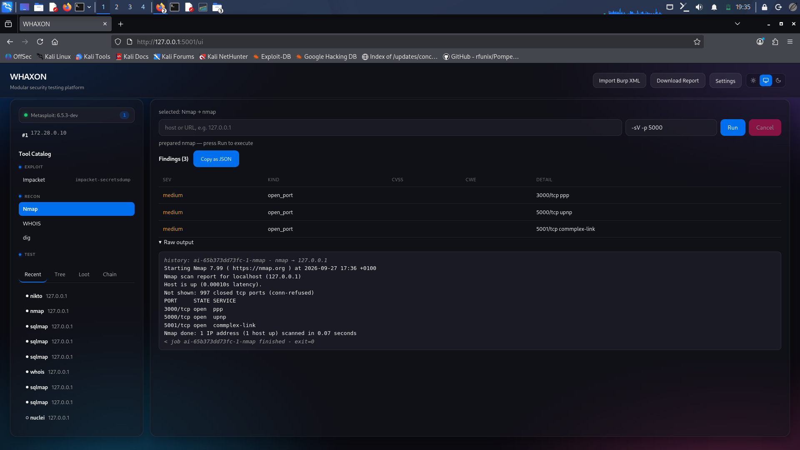
Everything a pentester reaches for, in one pipeline that actually finishes.
Run
One catalog, one runner. Every tool is an entry; every adapter turns its output into structured findings with CVSS, CWE, impact, and remediation. Run it from the terminal, the desktop app, or the browser - the pipeline is the same.
- nmap, nikto, sqlmap, gobuster, ffuf, nuclei, wpscan, whatweb, theharvester, dnsrecon, whois, dig, hashcat, impacket, msf, netexec, arjun, ssh_cmd, smb_shares, smb_ls, wmi_exec
- Findings persisted in SQLite, streamed live over SSE
- Fail-closed scope: nothing runs unless the scope file allows it
Correlate
A deterministic correlator watches every job, pulls findings for the same target across all jobs, and fires when a rule matches. Eight rules today. No LLM in the loop.
web_serviceweb port plus TLS or service signalexposed_service139, 445, 3389, 5900 reachableweak_credentialempty or placeholder NTLM hashweb_vulnSQL injection on a web portweak_tlsself-signed or expired certificaterecon_activity_burstfive or more distinct kinds on one targetvulnerable_serviceversioned service with known CVEsweb_login_surfaceweb port plus discovered login endpoint
Report
Per-job reports, or an engagement report that covers every job and finding. Pick a subset with ?jobs=id1,id2. Export to Markdown, HTML, PDF, or JSON.
- Executive summary, findings by severity, loot summary, pivot chains
- HTML output is escaped - a raw line cannot inject script into a report
- Evidence attachments: notes and files, per job
Extend
Adapters implement one method. Model backends implement two. The boundary between deterministic core and AI layer is enforced by a test and a CI check - so the planner can never bypass the executor.
- Adapters: subclass, implement
parse(), register - Backends: null, rules, Ollama, OpenAI, Anthropic, Google - stdlib HTTP, no SDKs
- Guardrails: catalog check, scope check, dedup, target lock, stagnation stop
The tool, as it runs.
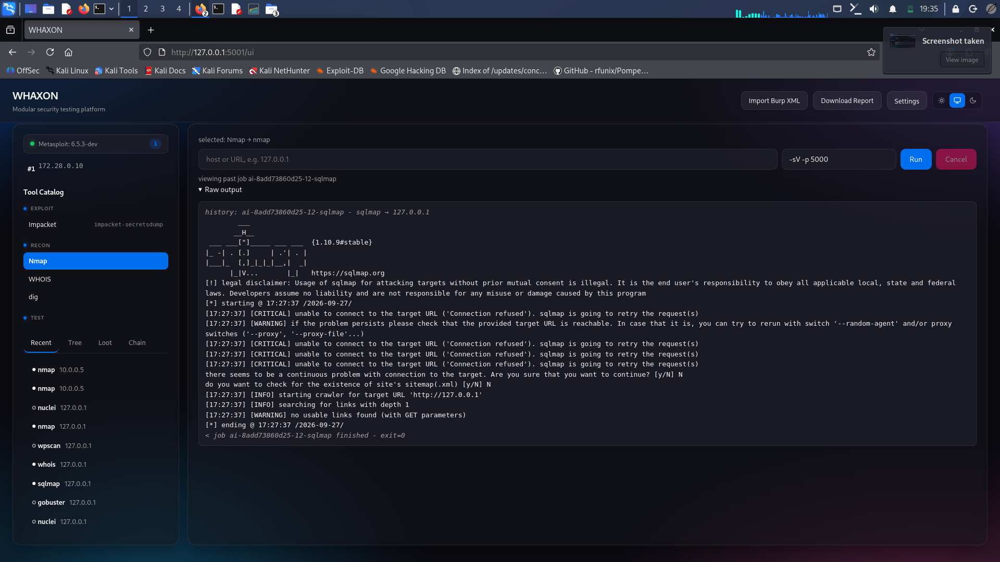
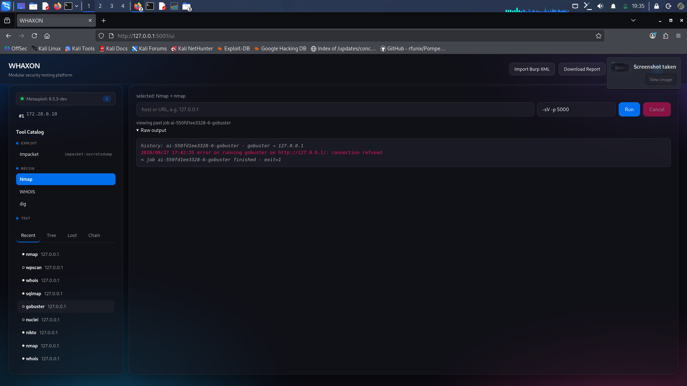
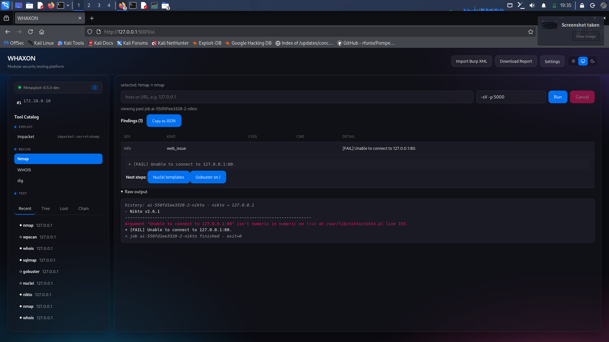
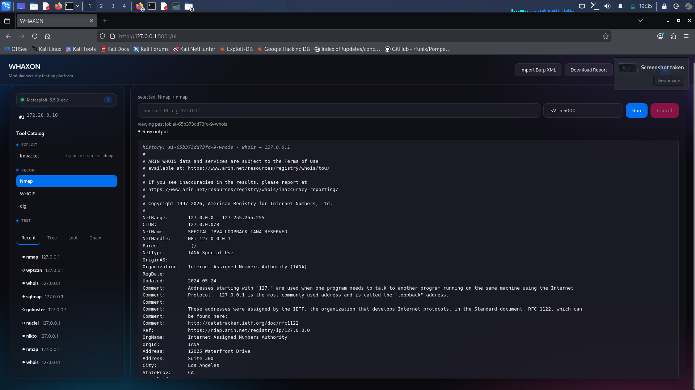
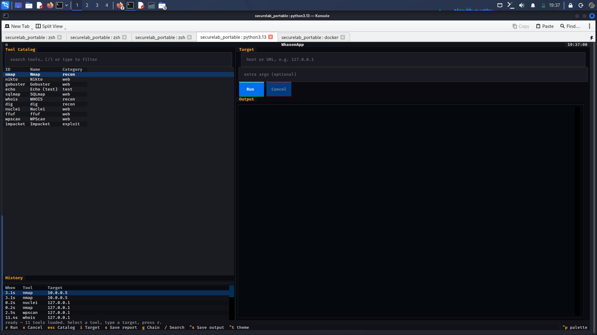
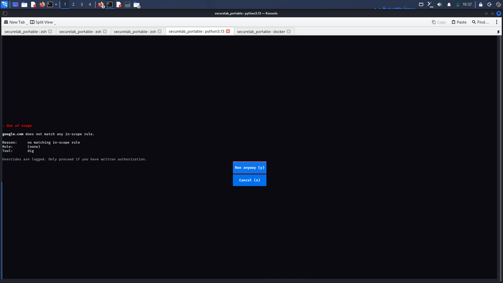
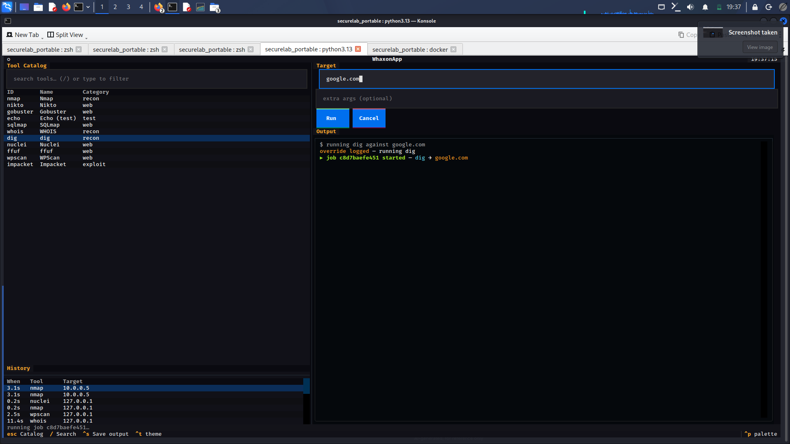
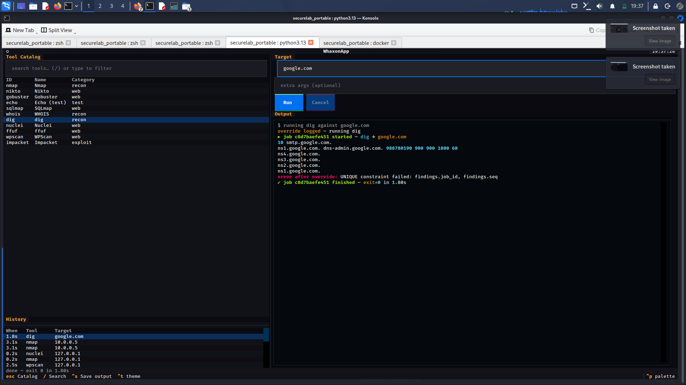
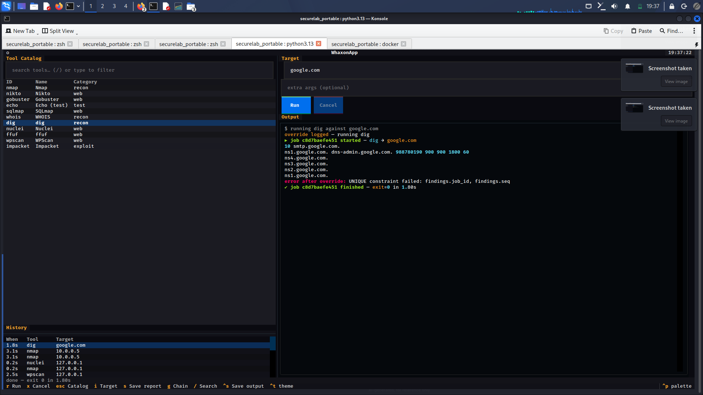
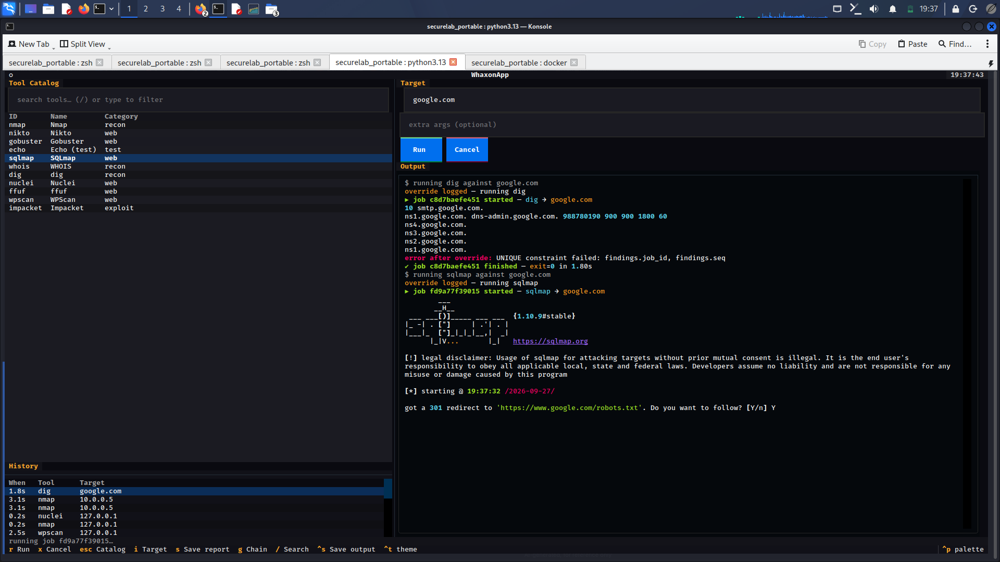
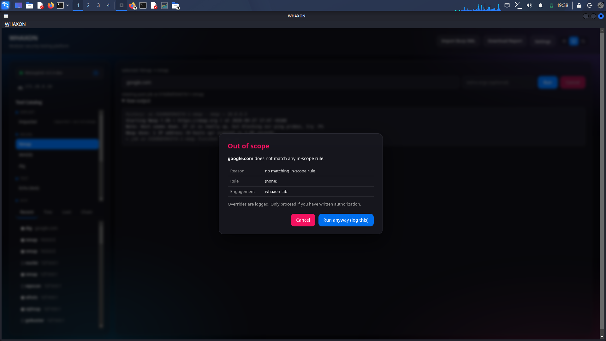
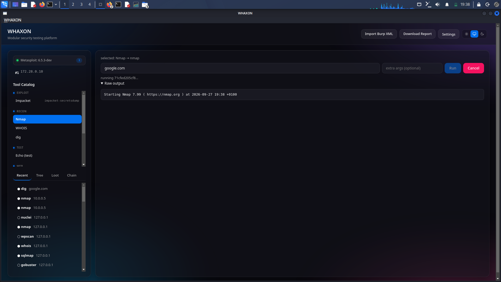
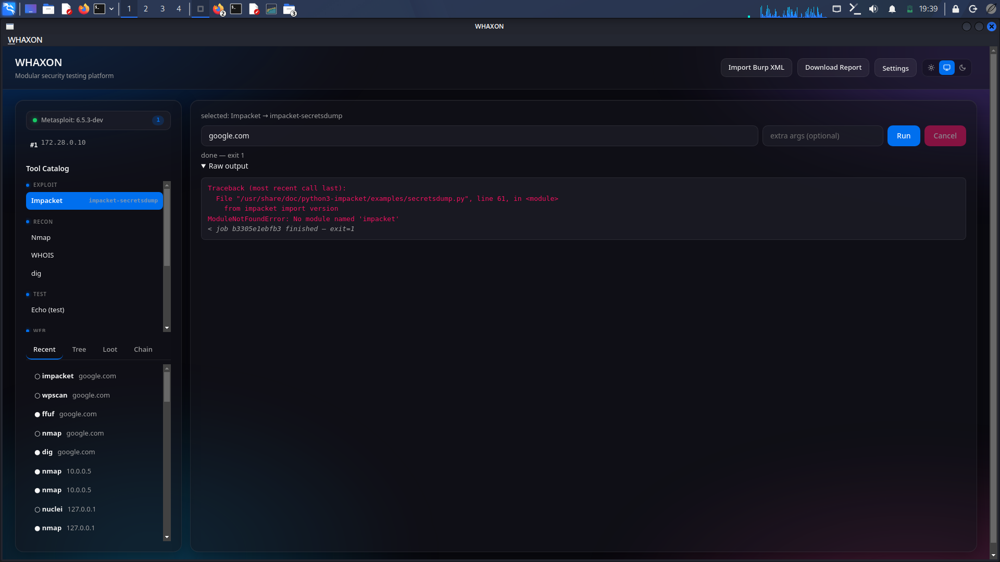
Four commands and you are running.
# clone and install git clone https://github.com/andreipath26/WHAXON.git cd WHAXON python3 -m venv .venv source .venv/bin/activate pip install -e ".[tui,gui,web]" # init data dir with strict default scope whaxon init # run one of four interfaces whaxon tui # terminal whaxon gui # desktop whaxon serve --daemon # web on 127.0.0.1:5001 whaxon <subcommand> # CLI, 21 subcommands - try --help